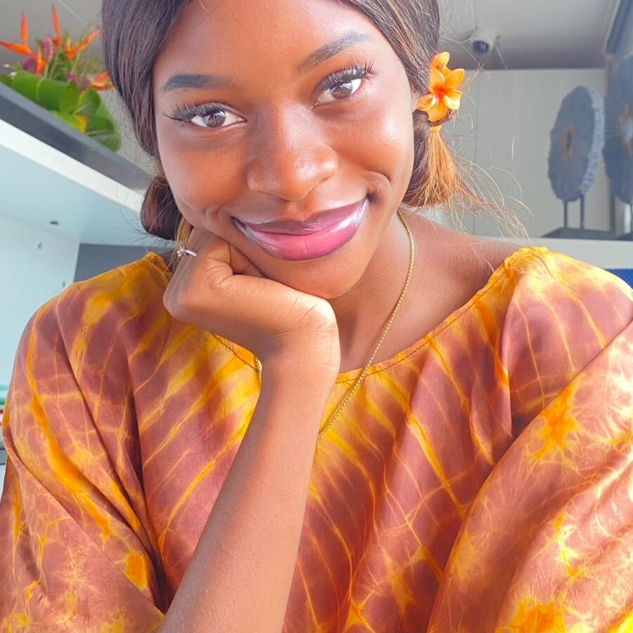
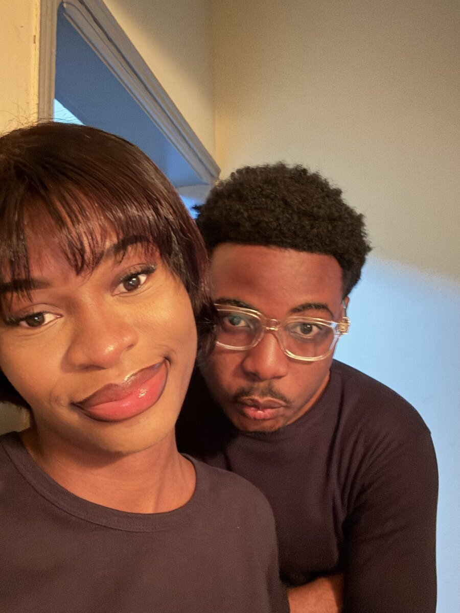
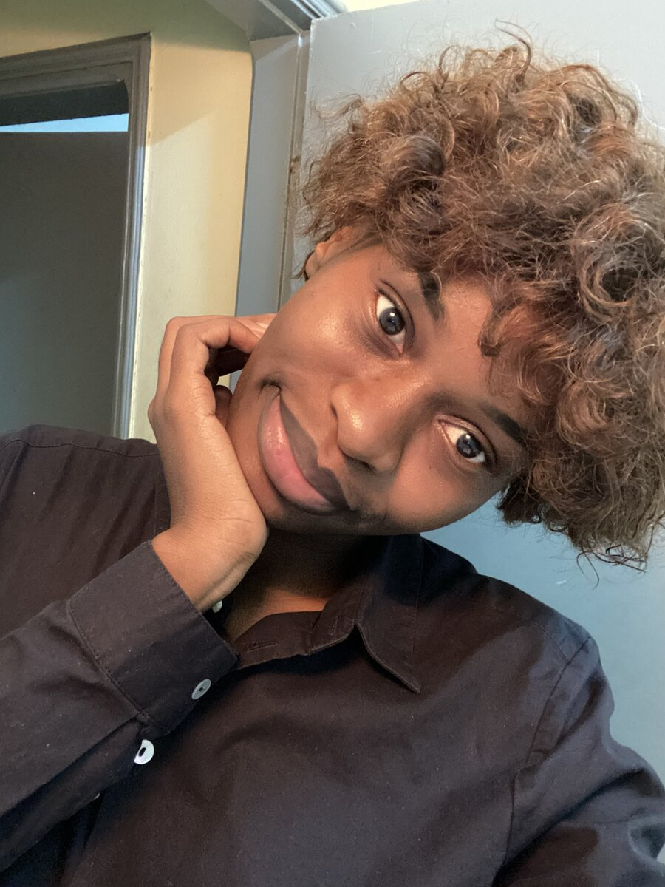
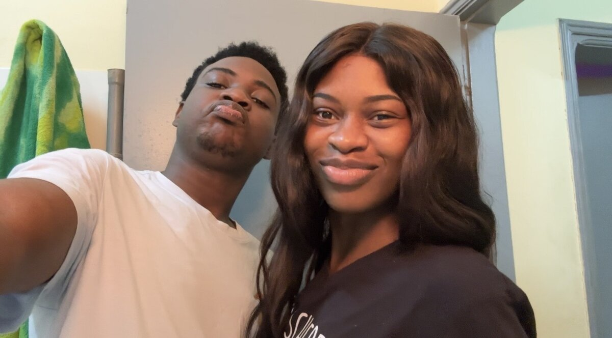
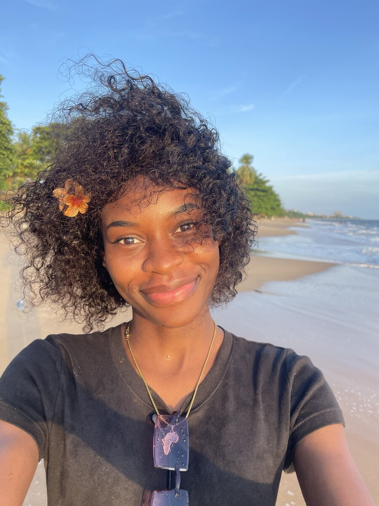
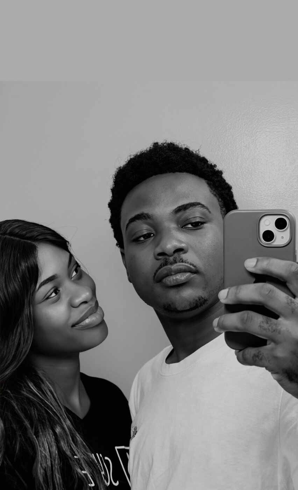

La suite que nous avons choisi d'écrire, ensemble.
Mon amour, il y a un an, je te posais une question. Une seule.
Aujourd'hui, je n'ai qu'une chose à te dire :
merci d'avoir dit oui.
Douze mois ont passé, et chacun d'eux nous a appris un peu plus qui
nous sommes. Pas la version qu'on montre au début, polie, prudente —
mais la vraie. Celle qui a des matins fatigués et des silences,
et qui choisit quand même de rester.

toujours ce sourire qui change tout

on a commencé comme ça, à se chercher
J'ai appris la patience à travers toi — et je crois t'en avoir appris
un peu, aussi. On s'est trompés, on s'est excusés, on a recommencé.
C'est peut-être ça, aimer vraiment :
continuer à choisir l'autre les jours où ce serait plus simple de
ne pas le faire.

et puis les petits gestes, sans même y penser
Loin des jeux et des masques que tout le monde porte, on a construit
un endroit plus tranquille. Rien qu'à nous. Où les mots durs ont fini
par laisser place à des mots doux, et où être fatigué, être soi,
être maladroit — ce n'est jamais un problème.

les fous rires du quotidien

et nos silences complices
Je me souviens de cette soirée où nos mains se sont trouvées sous la
table, dans une lumière presque violette, sans qu'on ait besoin de se
le dire. Pas un grand discours. Juste ta main dans la mienne —
et c'est resté l'un de mes souvenirs préférés de cette année.
une petite capsule de nous, avant de continuer
Cette année, on a aussi pris le temps de respirer — de voir autre
chose que nos quatre murs habituels, de marcher pieds nus quelque
part, loin de tout, juste pour se rappeler à quel point la vie est
belle quand on la vit à deux.
respirer, ailleurs, mais toujours en pensant à nous
Un an, ce n'est pas une fin de chapitre. C'est la preuve que le
premier n'était pas un coup de chance — que ce qu'on a construit
tient debout, face au temps, à la distance, à nous-mêmes parfois.

chaque soir qui tombe, une nouvelle promesse
Alors merci d'exister dans ma vie, Désirée.
Merci d'être mon évidence, jour après jour.
Je t'aime, aujourd'hui encore plus qu'hier.
— Bon anniversaire, mon amour. À nous, encore et toujours.